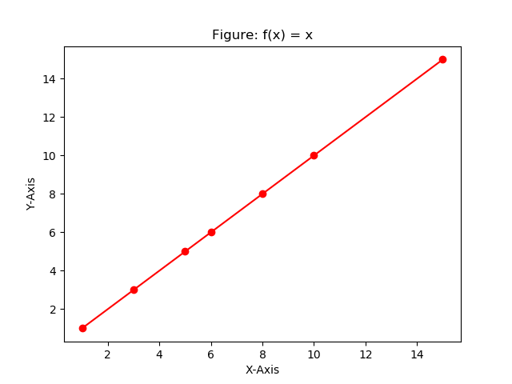
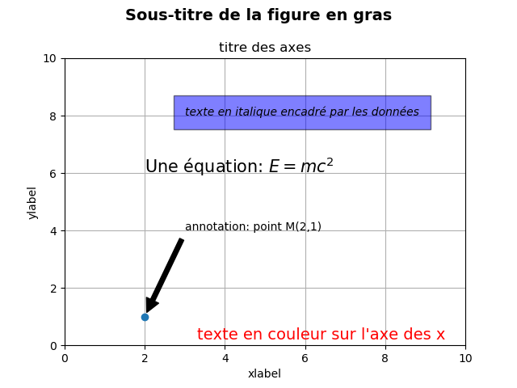
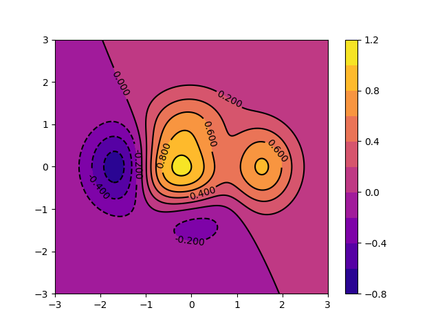

Bibliothèques numpy et matplotlib
Nov 18, 2019
Table des matières
Introduction
Calculs des fonctions trigonométriques avec le module math
Vectorisation avec le module numpy
Utilisation de pylab (numpy + matplotlib)
Introduction à Numpy
Tableaux et matrices
Lecture et écriture de données
Bibliothèque Python de visualisation des données: matplotlib
Documentation en ligne et Galerie
Bibliothèque scientifique python: scipy
Fonctions spéciales
Introduction
Calculs des fonctions trigonométriques avec le module math
# importation des fonctions trigonométriques du module math
from math import cos, sin, pi
# définition des variable (listes)
X, C, S =[],[], []
k = 0 # initialisation du compteur
while 0 <= k <= 2*pi:
# stokage des valeurs dans les listes
C.append(cos(k))
S.append(sin(k))
X.append(k)
k+=0.05
# Affichage des listes crées
#print("Les abscisses (X) = ", X)
print("Fonction cosinus (cos(X)) = ", C)
#print("Fonction sinus (sin(X)) = ", S)
Vous voyez ici qu'il est difficile de vérifier toutes les valeurs stockées dans une liste assez grande. Pour cette raison, une représentation graphique donne une vue générale de nos calculs et permet d'identifier immédiatement les erreurs éventuelles ou les artefacts de calcul susceptibles d'affecter nos calculs.
La bibliothèque matplotlib est choisie comme le meilleur candidat pour cette tâche, que nous verrons plus en détail plus loin dans ce chapitre.
# importation de la bibliothèque matplotlib
import matplotlib.pyplot as plt
'''il y a d'autres approches pour l'importation
que nous discuterons dans la section matplotlib'''
plt.plot(X, C, label="cos(X)")
plt.plot(X, S, label="sin(X)")
# Courbe de la somme cos(x) + sin(x):
#plt.plot(X, C+S, label="cos(x) + sin(x)") #--> Erreur!! pourquoi?
plt.title("Fonctions trigonométriques")
plt.xlabel("X")
plt.ylabel("Y")
plt.legend()
plt.savefig("figs/fonct_trig1.png")
plt.savefig("figs/fonct_trig1.pdf")
plt.show()
La sortie de ce code est la Figure 1.
Figure 1: Sortie du code.

Question
Essayez de tracer sur le même graphique: \( cos (X) + sin (X) = C + S \). Que se passe-t-il? et pourquoi?
In [6]: print("Type de C = ", type(C))
...: print("Longueur de C = ", len(C))
...: print("Type de C + S= ", type(C+S))
...: print("Longueur de C + S = ", len(C+S))
Type de C = <class 'list'>
Longueur de C = 126
Type de C + S= <class 'list'>
Longueur de C + S = 252
Il est clair donc que C + S n'est pas la somme algébrique \( cos (X) + sin (X) \). Sachant que nous avons une opération d'addition de deux listes, cela signifie que nous ajoutons 126 éléments de la liste S à la liste C de 63 éléments. Et ainsi la nouvelle liste C + S est créée avec une longueur égale à 252.
A titre d'exemple, soit l'addition de deux listes suivantes:
In [7]: liste1 = [1, 2, 3] ; liste2 = [0, 5, 6]
...: liste1 + liste2
Out[7]: [1, 2, 3, 0, 5, 6]
Donc, pour tirer la somme des cosinus et des sinus (C + S), nous devons construire une nouvelle liste (CpS = [] par exemple) là où nous avons défini les listes X,` C` et `S et le remplir à chaque itération de k` avec cos (k) + sin (k).
Vectorisation avec le module numpy
En utilisant l'instructionnumpy.array du module` numpy`, les listes peuvent être converties en tableaux. Cela facilite et rend plus efficace l'application d'opérations mathématiques à ces variables.
Voici la solution pour le cas précédent:
In [8]: # importer le module numpy avec l'alias 'np'
...: import numpy as np
...: # Transformer des listes en tableaux Numpy
...: X_v = np.array(X)
...: C_v = np.array(C)
...: S_v = np.array(S)
...:
...: # Afficher le tableau de cosinus C_v par exemple:
...: C_v
Out[8]:
array([ 1. , 0.99875026, 0.99500417, 0.98877108, 0.98006658,
0.96891242, 0.95533649, 0.93937271, 0.92106099, 0.9004471 ,
0.87758256, 0.85252452, 0.82533561, 0.7960838 , 0.76484219,
0.73168887, 0.69670671, 0.65998315, 0.62160997, 0.58168309,
0.54030231, 0.49757105, 0.45359612, 0.40848744, 0.36235775,
0.31532236, 0.26749883, 0.21900669, 0.16996714, 0.12050277,
0.0707372 , 0.02079483, -0.02919952, -0.07912089, -0.12884449,
-0.17824606, -0.22720209, -0.27559025, -0.32328957, -0.37018083,
-0.41614684, -0.46107269, -0.5048461 , -0.54735767, -0.58850112,
-0.62817362, -0.66627602, -0.70271308, -0.73739372, -0.77023125,
-0.80114362, -0.83005354, -0.85688875, -0.8815822 , -0.90407214,
-0.92430238, -0.94222234, -0.95778724, -0.97095817, -0.9817022 ,
-0.9899925 , -0.99580832, -0.99913515, -0.99996466, -0.99829478,
-0.99412968, -0.98747977, -0.97836168, -0.96679819, -0.95281821,
-0.93645669, -0.91775451, -0.89675842, -0.8735209 , -0.84810003,
-0.82055936, -0.79096771, -0.75939906, -0.7259323 , -0.6906511 ,
-0.65364362, -0.61500238, -0.57482395, -0.53320876, -0.49026082,
-0.44608749, -0.40079917, -0.35450907, -0.30733287, -0.2593885 ,
-0.2107958 , -0.16167622, -0.11215253, -0.06234851, -0.01238866,
0.03760215, 0.08749898, 0.13717711, 0.18651237, 0.23538144,
0.28366219, 0.33123392, 0.37797774, 0.42377682, 0.46851667,
0.51208548, 0.55437434, 0.59527755, 0.63469288, 0.6725218 ,
0.70866977, 0.74304644, 0.77556588, 0.80614681, 0.83471278,
0.86119242, 0.88551952, 0.90763328, 0.92747843, 0.94500537,
0.96017029, 0.97293528, 0.98326844, 0.99114394, 0.9965421 ,
0.99944942])
Nous pouvons vérifier que nous avons maintenant des tableaux et que l'ajout de ses éléments est possible:
In [9]: print("Type de C_v = ", type(C_v))
...: print("Longueur de C_v = ", len(C_v))
...: print("Type de C_v + S_v = ", type(C_v + S_v))
...: print("Longueur de C_v + S_v = ", len(C_v + S_v))
Type de C_v = <class 'numpy.ndarray'>
Longueur de C_v = 126
Type de C_v + S_v = <class 'numpy.ndarray'>
Longueur de C_v + S_v = 126
Ainsi, la représentation graphique utilisant matplotlib.pyplot est la suivante:
import matplotlib.pyplot as plt
plt.plot(X_v, C_v, label="cos(X)")
plt.plot(X_v, S_v, label="sin(X)")
plt.plot(X_v, C_v + S_v, label="cos(X) + sin(X)")
plt.title("Fonctions trigonometriques")
plt.xlabel("X")
plt.ylabel("Y")
plt.legend()
plt.savefig("figs/fonct_trig2.png")
plt.savefig("figs/fonct_trig2.pdf")
plt.show()
La sortie de ce code est la Figure 2.
Figure 2: Sortie du code.

Utilisation de pylab (numpy + matplotlib)
Création des tableaux
Avec la fonctionnumpy.arange(), nous pouvons créer automatiquement des tableaux sans avoir besoin de programmer une boucle:
# importer toutes les fonctionnalités des modules numpy et matplotlib
from pylab import *
# Fonctions du module numpy pour le calcul numérique
X_np = arange(0, 2* pi, 0.05)# générer un tableau arange(start, stop, step)
C_np = cos(X_np)# ici le cos et le sin sont aussi importés du module numpy
S_np = sin(X_np)
Traçage des fonctions trigonométrique cos(X), sin(X) et cos(X)+ sin(X)
Nous pouvons ainsi créer et tracer directement dans le graphique la somme \( cos(X)+ sin(X) \) comme le montre le code suivant:
# Fonctions du module matplotlib pour la représentation graphique
plot(X_np, C_np, label="cos(X)")
plot(X_np, S_np, label="sin(X)")
plot(X_np, C_np + S_np, label="cos(X) + sin(X)")
title("Fonctions trigonométriques")
xlabel("X")
ylabel("Y")
legend()
plt.savefig("figs/fonct_trig3.png")
plt.savefig("figs/fonct_trig3.pdf")
show()
La sortie de ce code est la Figure 3.
Figure 3: Sortie du code.

Introduction à Numpy
La bibliothèque numpy (module) est utilisée dans presque tous les calculs numériques réalisés à l'aide de Python. C'est une bibliothèque qui fournit des structures de données de haute performance de type vectoriel, matriciel et de dimensions supérieures. Il est implémenté avec les syntax de C et Fortran, ainsi lorsque les calculs sont vectorisés les performances sont très bonnes.
Pour utiliser numpy, vous devez importer le module:
from numpy import *
Dans la bibliothèque numpy, la terminologie utilisée pour les vecteurs, les matrices et tout ensemble de données à grande dimension est array.
Tableaux et matrices
Il existe plusieurs façons d'initialiser de nouveaux tableaux numpy, par exemple à partir de:
- Des liste ou des tuples
- Utilisant des fonctions dédiées à la génération de tableaux numpy, tels que
arange,linspace, etc. - Lecture de données à partir de fichiers
Listes
Par exemple, pour créer de nouveaux tableaux vectoriels et matriciels à partir de listes Python, nous pouvons utiliser la fonction numpy.array.
In [8]: ''' Un vecteur: l'argument de la fonction
array est une liste Python'''
...: v = array([1,2,3,4])
...: v
Out[8]: array([1, 2, 3, 4])
In [9]: ''' Une matrice: l'argument de la fonction
de tableau est une liste imbriquée de Python'''
...: M = array([[1, 2], [3, 4]])
...: M
Out[9]:
array([[1, 2],
[3, 4]])
Les variables v et M sont de type ndarray que fournit le module numpy.
In [10]: type(v), type(M)
Out[10]: (numpy.ndarray, numpy.ndarray)
La différence entre les tableaux v et M n'est que dans leur forme. Nous pouvons obtenir des informations sur la forme d'un tableau en utilisant la propriété ndarray.shape.
In [11]: v.shape
Out[11]: (4,)
In [13]: M.shape
Out[13]: (2, 2)
Le nombre d'éléments dans le tableau est disponible via la propriété ndarray.size:
In [14]: M.size
Out[14]: 4
De manière équivalente, nous pourrions utiliser la fonction numpy.shape et numpy.size
In [15]: shape(M)
Out[15]: (2, 2)
et
size(M)
Out[16]: 4
Jusqu'à présent, le numpy.ndarray ressemble beaucoup à une liste Python (ou à une liste imbriquée).
Question
Pourquoi ne pas utiliser simplement les listes Python pour les calculs au lieu de créer un nouveau type de tableau?
Note
Il existe plusieurs raisons pour ne pas utiliser que les listes:
- Les listes de Python sont très générales. Ils peuvent contenir tout type d'objets. Une même liste peut contenir des éléments de différentes natures et changeables. Ils ne prennent pas en charge les fonctions mathématiques telles que les multiplications de matrice et de points, etc. L'implémentation de telles fonctions pour les listes Python ne serait pas très efficace en raison du typage dynamique.
- Les tableaux Numpy sont typés et homogènes. Le type d'éléments est déterminé lorsque le tableau est créé.
- Les tableaux Numpy sont efficaces pour la gestion de la mémoire.
- En raison du typage statique, la mise en œuvre rapide de fonctions mathématiques telles que la multiplication et l'ajout de tableaux
numpypeut être implémentée dans une langue compilée (C et Fortran sont utilisés).
En utilisant la propriété dtype (type de données) d'un ndarray, on peut connaitre le type des éléments d'un tableau ou d'une matrice:
In [17]: M.dtype
Out[17]: dtype('int64')
Si nous le désirons, nous pouvons définir explicitement le type de données du tableau lorsque nous le créons, ceci en utilisant le mot-clé dtype comme argument:
In [18]: M = array([[1, 2], [3, 4]], dtype=complex)
...: M
Out[18]:
array([[1.+0.j, 2.+0.j],
[3.+0.j, 4.+0.j]])
Note
Les types usuels qui peuvent être utilisés avec dtype sont: int, float, complex, bool, object, etc. Nous pouvons également définir explicitement la taille des bits des éléments, par exemple: int64, int16, float128, complex128.
Utilisation de fonctions génératrices de tableaux et de matrices
Pour les tableaux de grandes tailles, il est inconcevable d'initialiser les données manuellement. Au lieu de cela, nous pouvons utiliser l'une des nombreuses fonctions dans numpy qui génère des tableaux ou des matrices de différentes formes et tailles. Certains parmi les plus utilisés sont:
-
arange() -
linspace()etlogspace() -
mgrid() -
diag() -
zeros()etones() - ...
arange() :
In [19]: # Création d'un tableau à l'aide de la fonction arange()
...: x = arange(0, 10, 1) # Arguments: start, stop, step
...: x
Out[19]: array([0, 1, 2, 3, 4, 5, 6, 7, 8, 9])
In [23]: x = arange(-2, 2, 0.1)
...: x
Out[23]:
array([-2.00000000e+00, -1.90000000e+00, -1.80000000e+00, -1.70000000e+00,
-1.60000000e+00, -1.50000000e+00, -1.40000000e+00, -1.30000000e+00,
-1.20000000e+00, -1.10000000e+00, -1.00000000e+00, -9.00000000e-01,
-8.00000000e-01, -7.00000000e-01, -6.00000000e-01, -5.00000000e-01,
-4.00000000e-01, -3.00000000e-01, -2.00000000e-01, -1.00000000e-01,
1.77635684e-15, 1.00000000e-01, 2.00000000e-01, 3.00000000e-01,
4.00000000e-01, 5.00000000e-01, 6.00000000e-01, 7.00000000e-01,
8.00000000e-01, 9.00000000e-01, 1.00000000e+00, 1.10000000e+00,
1.20000000e+00, 1.30000000e+00, 1.40000000e+00, 1.50000000e+00,
1.60000000e+00, 1.70000000e+00, 1.80000000e+00, 1.90000000e+00])
Fonctions linspace() et logspace():
In [24]: # En utilisant linspace, les deux points finaux sont inclus
...: linspace(0, 10, 20) # linspace(star, stop, Nombre de points)
Out[24]:
array([ 0. , 0.52631579, 1.05263158, 1.57894737, 2.10526316,
2.63157895, 3.15789474, 3.68421053, 4.21052632, 4.73684211,
5.26315789, 5.78947368, 6.31578947, 6.84210526, 7.36842105,
7.89473684, 8.42105263, 8.94736842, 9.47368421, 10. ])
In [25]: logspace(0, 10, 10, base=e)
Out[25]:
array([1.00000000e+00, 3.03773178e+00, 9.22781435e+00, 2.80316249e+01,
8.51525577e+01, 2.58670631e+02, 7.85771994e+02, 2.38696456e+03,
7.25095809e+03, 2.20264658e+04])
Fonctions mgrid() et meshgrid():
In [26]: x, y = mgrid[0:5, 0:5] # Similaire à meshgrid dans MATLAB
...: x
Out[26]:
array([[0, 0, 0, 0, 0],
[1, 1, 1, 1, 1],
[2, 2, 2, 2, 2],
[3, 3, 3, 3, 3],
[4, 4, 4, 4, 4]])
In [27]: y
Out[27]:
array([[0, 1, 2, 3, 4],
[0, 1, 2, 3, 4],
[0, 1, 2, 3, 4],
[0, 1, 2, 3, 4],
[0, 1, 2, 3, 4]])
In [31]: x, y = meshgrid(linspace(0,2,6),linspace(0,2,6))
...: x
Out[31]:
array([[0. , 0.4, 0.8, 1.2, 1.6, 2. ],
[0. , 0.4, 0.8, 1.2, 1.6, 2. ],
[0. , 0.4, 0.8, 1.2, 1.6, 2. ],
[0. , 0.4, 0.8, 1.2, 1.6, 2. ],
[0. , 0.4, 0.8, 1.2, 1.6, 2. ],
[0. , 0.4, 0.8, 1.2, 1.6, 2. ]])
In [32]: y
Out[32]:
array([[0. , 0. , 0. , 0. , 0. , 0. ],
[0.4, 0.4, 0.4, 0.4, 0.4, 0.4],
[0.8, 0.8, 0.8, 0.8, 0.8, 0.8],
[1.2, 1.2, 1.2, 1.2, 1.2, 1.2],
[1.6, 1.6, 1.6, 1.6, 1.6, 1.6],
[2. , 2. , 2. , 2. , 2. , 2. ]])
Fonctions rand(), randint():
''' Nombres aléatoires uniformes dans [0,1]
dans une matrice (3,2)'''
In [37]: rand(3,2)
Out[37]:
array([[0.01900499, 0.10872428],
[0.78849226, 0.22114384],
[0.88739675, 0.94190273]])
'''Générer un tableau 2 x 4 d'entiers compris entre 0 et 4 inclus'''
In [39]: randint(5, size=(2, 4))
Out[39]:
array([[0, 1, 4, 4],
[4, 0, 0, 4]])
Fonction diag():
In [40]: # Une matrice diagonale
...: diag([1,2,3])
Out[40]:
array([[1, 0, 0],
[0, 2, 0],
[0, 0, 3]])
In [41]: # Diagonale avec décalage de la diagonale principale
...: diag([1,2,3], k=3)
Out[41]:
array([[0, 0, 0, 1, 0, 0],
[0, 0, 0, 0, 2, 0],
[0, 0, 0, 0, 0, 3],
[0, 0, 0, 0, 0, 0],
[0, 0, 0, 0, 0, 0],
[0, 0, 0, 0, 0, 0]])
Fonctions zeros() et ones():
In [42]: zeros((3,3))
Out[42]:
array([[0., 0., 0.],
[0., 0., 0.],
[0., 0., 0.]])
In [43]: ones((3,3))
Out[43]:
array([[1., 1., 1.],
[1., 1., 1.],
[1., 1., 1.]])
Lecture et écriture de données
Écriture de données
Le module numpy contient une fonction très pratique, savetxt, permettant d’enregistrer des données tabulaires. Les données doivent être stockées dans un tableau numpy à deux dimensions. La fonction savetxt permet de contrôler le format des nombres dans chaque colonne (fmt), un en-tête peut être ajouté (header) et les lignes d'en-tête commencent par un caractère de commentaire (comment).
Pour stoker les valeurs de \( cos(x) \) avec \( x \in [0, 2 \pi] \) dans un fichier cosinus.dat, le code est comme ci-dessous:
'''Créer un tableau à deux dimensions de
[x, cos (x)] dans chaque ligne'''
import numpy as np
x = np.linspace(0, 2*np.pi, 200) # 200 valeurs de x
# un tableau 2 colonnes 200 lignes
data = np.array([x, np.cos(x)]).transpose()
# Écrire un tableau de données dans un fichier sous forme de tableau
np.savetxt('cosinus.dat', data, fmt=['%.2f', '%.4f'],
header='x cos(x)', comments='#')
Le fichier cosinus.dat est créé dans le répertoire de travail:
# x cos(x)
0.00 1.0000
0.03 0.9995
0.06 0.9980
0.09 0.9955
0.13 0.9920
0.16 0.9876
0.19 0.9821
0.22 0.9757
0.25 0.9683
... ......
... ......
Lecture de données
Les données du fichier cosinus.dat peuvent être lues dans un tableau numpy par la fonction loadtxt (vous pouvez utiliser la commande help(loadtxt) dans le notebook pour comprendre l'utilité des arguments entre les parenthèse):
In [51]: data = np.loadtxt('cosinus.dat', comments='#')
...: data
Out[51]:
array([[ 0. , 1. ],
[ 0.03 , 0.9995],
[ 0.06 , 0.998 ],
[ 0.09 , 0.9955],
[ 0.13 , 0.992 ],
[ 0.16 , 0.9876],
[ 0.19 , 0.9821],
[ 0.22 , 0.9757],
[ 0.25 , 0.9683],
[ 0.28 , 0.9599],
..................
..................
..................
[ 6.22 , 0.998 ],
[ 6.25 , 0.9995],
[ 6.28 , 1. ]])
Note
Les lignes commençant par le caractère de commentaire sont ignorées lors de la lecture. L'objet data résultant est un tableau à deux dimensions: data[i, j] contient le numéro de ligne i et le numéro de colonne j dans la table, c'est-à-dire que data[i, 0] contiennent la valeur x et que data[i, 1] la valeur cos(x) dans la i-ème ligne.
Nous pouvons utiliser le fichier cosinus.dat pour tracer la fonction \( cos(x) \) comme indiqué dans le code suivant:
# Charger les données du fichier 'cosinus.dat'
X, C = np.loadtxt('cosinus.dat', comments='#', unpack=True)
# Tracer C en fonction de X
figure(figsize=(8, 5), dpi=100)
plt.plot(X,C)
plt.savefig("figs/fonct_trig4.png")
plt.savefig("figs/fonct_trig4.pdf")
plt.show()
La sortie de ce code est la Figure 4.
Figure 4: Sortie du code.

Bibliothèque Python de visualisation des données: matplotlib
matplotlib (http://matplotlib.org/) est une excellente bibliothèque graphique 2D et 3D pour générer des graphiques scientifiques. Voici quelques-uns des nombreux avantages de cette bibliothèque:
- Facile à utiliser
- Prise en charge des étiquettes et des textes formatés LaTeX
- Un excellent contrôle des éléments d'une figure, y compris la taille et la résolution (DPI).
- Sortie de haute qualité dans de nombreux formats, y compris PNG, PDF, SVG, EPS, ...
- GUI (Graphical User Interface) pour explorer interactivement les figures.
Documentation en ligne et Galerie
Vous trouverez plus d'informations, y compris une documentation complète avec une vaste galerie d'exemples, sur le site demtplotlib.
De nombreux utilisateurs de matplotlib sont souvent confrontés à la question:
Je veux tracer les courbes de deux fonctions (\( f \) te \( g \)) ressemblant à une troisième (\( h \))?Je souhaite bonne chance à ceux qui désirent obtenir rapidement une réponse, même avec l'aide de google!. C'est pourquoi la galerie de matplotlib (http://matplotlib.org/gallery.html) est si utile, car elle montre la variété des possibilités. Ainsi, vous pouvez parcourir la galerie, cliquer sur n'importe quel graphique qui comporte les éléments que vous voulez reproduire et afficher le code qui a servi à le générer. Vous deviendrez rapidement autonome, vous allez mélanger et assortir différents composants pour produire votre propre chef-d’œuvre!
Guide de Démarrage
L'exemple ci-dessous montre comment, de manière très simple, représenter graphiquement la fonction \( f(x) = y = x \).
# -*- coding: utf-8 -*-
# importaion
import matplotlib.pyplot as plt
# define x
x = [1, 3, 5, 6, 8, 10, 15]
# define y
y=x
# créer un nouveau graphique
plt.figure()
#plot f(x)= x
plt.plot(x, y)
# Écrire un texte (label) sur l'axe des x
plt.xlabel("X-Axis")
# Écrire un texte (label) sur l'axe des y
plt.ylabel("Y-Axis")
#les graphiques ne seront affichés que lorsque vous appelez plt.show ()
plt.show()
Figure 5: Fenêtre de traçage de matplotlib.

Le graphique (Figure) est le conteneur de niveau supérieur dans cette hiérarchie. C'est la fenêtre/page globale sur laquelle tout est dessiné.
Vous pouvez avoir plusieurs figures indépendantes et les graphiques peuvent contenir plusieurs Axes.
La plupart des tracés ont lieu sur des Axes. C’est effectivement la zone sur laquelle nous traçons les données et les graduations/labels/etc. qui leur sont associés. Habituellement, nous configurons un Axes avec un appel à Subplot (qui place les Axes sur une grille régulière). Par conséquent, dans la plupart des cas, Axes et Subplot sont synonymes (figure). Chaque Axes ou Subplot a un axe X et un axe Y. Ceux-ci contiennent les graduations, les emplacements de graduations, etc.
Vues en grille
Nous avons déjà mentionné qu’une figure peut avoir plus d’un axe. Si vous voulez que vos axes soient sur un système de grille standard, il est alors plus simple d'utiliserplt.subplot(...) pour créer un graphique et y ajouter les axes automatiquement.
# -*- coding: utf-8 -*-
import matplotlib.pyplot as plt
fig1=plt.figure(1) # the first figure
ax1=plt.subplot(211) # the first subplot in the first figure
ax1.plot([1, 2, 3])
ax2=plt.subplot(212) # the second subplot in the first figure
ax2.plot([4, 5, 6])
fig2=plt.figure(2) # a second figure
plt.plot([4, 5, 6]) # creates a subplot(111) by default
fig1=plt.figure(1) # figure 1 current; subplot(212) still current
ax1=plt.subplot(211) # make subplot(211) in figure1 current
ax1.set_title('Easy as 1, 2, 3') # subplot 211 title
plt.show()
Figure 6: Vue en grille, figure(1).

Figure 7: Graphique unique, figure(2).

Commandes de texte de base
Les commandes suivantes permettent de créer du texte dans l'interfacepyplot:
-
text()- ajoute du texte à un emplacement quelconque sur les axes;matplotlib.axes.Axes.text(). -
xlabel()- ajoute une étiquette à l'axe des x;matplotlib.axes.Axes.set_xlabel() -
ylabel()- ajoute une étiquette à l'axe des y;matplotlib.axes.Axes.set_ylabel() -
title()- ajoute un titre aux Axes;matplotlib.axes.Axes.set_title() -
figtext()- ajoute du texte à un emplacement quelconque sur la figure;matplotlib.figure.Figure.text() -
suptitle()- ajoute un titre à la figure;matplotlib.figure.Figure.suptitle() -
annotate()- ajoute une annotation, avec une flèche optionnelle, aux axes;matplotlib.axes.Axes.annotate()
matplotlib.text.Text(), qui peut être configurée avec diverses polices et autres propriétés. L'exemple ci-dessous montre toutes ces commandes en action.
# -*- coding: utf-8 -*-
import matplotlib.pyplot as plt
fig = plt.figure()
fig.suptitle('bold figure suptitle', fontsize=14, fontweight='bold')
ax = fig.add_subplot(111)
fig.subplots_adjust(top=0.85)
ax.set_title('axes title')
ax.set_xlabel('xlabel')
ax.set_ylabel('ylabel')
ax.text(3, 8, 'boxed italics text in data coords', style='italic',
bbox={'facecolor':'red', 'alpha':0.5, 'pad':10})
ax.text(2, 6, r'an equation: $E=mc^2$', fontsize=15)
ax.text(3, 2, u'unicode: Institut f\374r Festk\366rperphysik')
ax.text(0.95, 0.01, 'colored text in axes coords',
verticalalignment='bottom', horizontalalignment='right',
transform=ax.transAxes,
color='green', fontsize=15)
ax.plot([2], [1], 'o')
ax.annotate('annotate', xy=(2, 1), xytext=(3, 4),
arrowprops=dict(facecolor='black', shrink=0.05))
ax.axis([0, 10, 0, 10])
plt.show()
Figure 8: Texte de base.

Styles de lignes et de marqueurs
Pour changer la largeur de ligne, nous pouvons utiliser l'argument de mot-clélinewidth ou lw, et le style de ligne peut être sélectionné à l'aide des arguments de mot-clé linestyle ou ls:
# -*- coding: utf-8 -*-
import matplotlib.pyplot as plt
import numpy as np
x = np.linspace(0, 5, 10)
fig, ax = plt.subplots()
ax.plot(x, x+1, color="blue", linewidth=0.25)
ax.plot(x, x+2, color="blue", linewidth=0.50)
ax.plot(x, x+3, color="blue", linewidth=1.00)
ax.plot(x, x+4, color="blue", linewidth=2.00)
# possible linestype options '-', '-.', ':', 'steps'
ax.plot(x, x+5, color="red", lw=2, linestyle='-')
ax.plot(x, x+6, color="red", lw=2, ls='-.')
ax.plot(x, x+7, color="red", lw=2, ls=':')
# custom dash
line, = ax.plot(x, x+8, color="black", lw=1.50)
line.set_dashes([5, 10, 15, 10]) # format: line length, space length, ...
# possible marker symbols: marker = '+', 'o', '*', 's', ',', '.', '1', '2', '3', '4', ...
ax.plot(x, x+ 9, color="green", lw=2, ls='-.', marker='+')
ax.plot(x, x+10, color="green", lw=2, ls='-.', marker='o')
ax.plot(x, x+11, color="green", lw=2, ls='-.', marker='s')
ax.plot(x, x+12, color="green", lw=2, ls='-.', marker='1')
# marker size and color
ax.plot(x, x+13, color="purple", lw=1, ls='-', marker='o', markersize=2)
ax.plot(x, x+14, color="purple", lw=1, ls='-', marker='o', markersize=4)
ax.plot(x, x+15, color="purple", lw=1, ls='-', marker='o', markersize=8, markerfacecolor="red")
ax.plot(x, x+16, color="purple", lw=1, ls='-', marker='s', markersize=8,
markerfacecolor="yellow", markeredgewidth=2, markeredgecolor="blue")
# make a title for the subplot
ax.set_title('"ax.plot(x, y, ...)": Lines and/or markers', fontsize=16, weight='bold')
# make x and y axis label and set their font size and weight
ax.set_xlabel("X-Axis", fontsize=12, weight='bold')
ax.set_ylabel("Y-Axis", fontsize=12, weight='bold')
plt.show()
Figure 9: Styles de lignes et de marqueurs.

Colormap: Tracés contour, Imshow et 3D
Voir la documentation de matplotlib colormaps http://matplotlib.org/users/colormaps.html.
- Tracés contour :
# -*- coding: utf-8 -*-
import numpy as np
import matplotlib.pyplot as plt
def f(x,y):
return (1 - x / 2 + x**5 + y**3) * np.exp(-x**2 -y**2)
n = 256
x = np.linspace(-3, 3, n)
y = np.linspace(-3, 3, n)
X,Y = np.meshgrid(x, y)
plt.axes([0.025, 0.025, 0.95, 0.95])
plt.contourf(X, Y, f(X, Y), 8, alpha=.75, cmap=plt.cm.gray)
C = plt.contour(X, Y, f(X, Y), 8, colors='black', linewidth=.5)
plt.clabel(C, inline=1, fontsize=10)
plt.xticks(())
plt.yticks(())
plt.show()
Figure 10: Exemple de tracé de contour.

- Imshow (Image pixelisée) :
# -*- coding: utf-8 -*-
import numpy as np
import matplotlib.pyplot as plt
def f(x, y):
return (1 - x / 2 + x ** 5 + y ** 3 ) * np.exp(-x ** 2 - y ** 2)
n = 10
x = np.linspace(-3, 3, 3.5 * n)
y = np.linspace(-3, 3, 3.0 * n)
X, Y = np.meshgrid(x, y)
Z = f(X, Y)
plt.axes([0.025, 0.025, 0.95, 0.95])
plt.imshow(Z, interpolation='nearest', cmap='gray', origin='lower')
plt.colorbar(shrink=.92)
plt.xticks(())
plt.yticks(())
plt.show()
Figure 11: Exemple d'image pixelisée.

- Tracé en 3D :
# -*- coding: utf-8 -*-
import numpy as np
import matplotlib.pyplot as plt
from mpl_toolkits.mplot3d import Axes3D
fig = plt.figure()
ax = Axes3D(fig)
X = np.arange(-4, 4, 0.25)
Y = np.arange(-4, 4, 0.25)
X, Y = np.meshgrid(X, Y)
R = np.sqrt(X ** 2 + Y ** 2)
Z = np.sin(R)
ax.plot_surface(X, Y, Z, rstride=1, cstride=1, cmap=plt.cm.gray)
ax.contourf(X, Y, Z, zdir='z', offset=-2, cmap=plt.cm.gray)
ax.set_zlim(-2, 2)
plt.show()
Figure 12: Exemple de tracé en 3D.

Bibliothèque scientifique python: scipy
scipy (https://www.scipy.org/"): scipy peut être considéré comme une extension de numpy avec un grand nombre de modules optimisés pour des calculs scientifiques spécifiques. scipy est la plate-forme la plus importante de Python pour le calcul scientifique. La communauté de scipy est un groupe bien établi et en pleine croissance de scientifiques, d’ingénieurs et de chercheurs qui utilisent, développent et promeuvent l’utilisation de Python pour le calcul scientifique, la recherche et l’éducation.
Fonctions spéciales
Un grand nombre de fonctions mathématiques spéciales sont importantes pour de nombreux problèmes de physique informatique. SciPy fournit des implémentations d'un ensemble très complet de fonctions spéciales. Pour plus de détails, voir la liste des fonctions dans la documentation de référence à http://docs.scipy.org/doc/scipy/reference/special.html#module-scipy.special.Fonctions de Bessel
Le module scipy.special inclut un grand nombre de fonctions de Bessel. Ici, nous allons utiliser les fonctions jn et yn, qui sont les fonctions de Bessel des premier et deuxième ordres de type et de valeurs réelles. Nous incluons également la fonction jn_zeros et yn_zeros qui donne les zéros des fonctions jn et yn.
# -*- coding: utf-8 -*-
from scipy.special import jn, yn, jn_zeros, yn_zeros
import matplotlib.pyplot as plt
import numpy as np
n = 0 # order
x = 0.0
# Bessel function of first kind
print ("J_%d(%f) = %f" % (n, x, jn(n, x)))
x = 1.0
# Bessel function of second kind
print ("Y_%d(%f) = %f" % (n, x, yn(n, x)))
# zeros of Bessel functions
n = 0 # order
m = 4 # number of roots to compute
print("zeros of Bessel functions are: ", jn_zeros(n, m))
# Plot Bessel fonctions
x = np.linspace(0, 10, 50)
markers=['o', 's', '*', '+']
lines=['-', '--', '-.', ':']
fig, ax = plt.subplots()
for n in range(4):
ax.plot(x, jn(n, x),ls=str(lines[n]),marker=str(markers[n]), label=r"$J_%d(x)$" % n)
ax.legend()
plt.show()
Ce code retournera:
J_0(0.000000) = 1.000000
Y_0(1.000000) = 0.088257
zeros of Bessel functions are: [ 2.40482556 5.52007811 8.65372791 11.79153444]
et le tracé:
Figure 13: Fonctions de Bessel.

Intégrales de Fresnel
La fonction scipy.special.fresnel renvoie les deux fonctions de Fresnel mais dans l'ordre (FS, FC), où FS représente l'intégrale de sinus de Fresnel et FC, l'intégrale de cosinus de Fresnel. Vous devriez faire attention à ce que vos tracés correspondent à la spirale de Cornu.
# -*- coding: utf-8 -*-
from scipy.special import fresnel
from scipy import linspace
import matplotlib.pyplot as plt
t = linspace(-10, 10, 1000)
FS, FC = fresnel(t)
fig1=plt.figure(figsize=(10,5))
ax1=plt.subplot(1, 2, 1)
ax1.plot(FC, FS, linewidth=2)
ax1.set_xlabel("C(t)", fontsize=14, weight='bold')
ax1.set_ylabel("S(t)", fontsize=14, weight='bold')
ax1.set_title("Cornu spiral", fontsize=16, weight='bold')
ax2=plt.subplot(1, 2, 2)
ax2.plot(t, FS, ls='--',linewidth=2,label="S(t)", alpha=.8)
ax2.plot(t, FC,ls='-',linewidth=2,label="C(t)", alpha=.8)
ax2.set_xlabel("t", fontsize=14, weight='bold')
ax2.set_title("Fresnel integrals", fontsize=16, weight='bold')
plt.legend()
plt.show()
Figure 14: Intégrales de Fresnel.